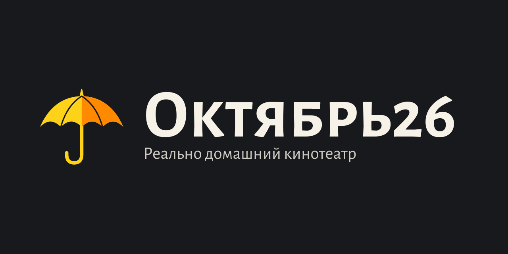
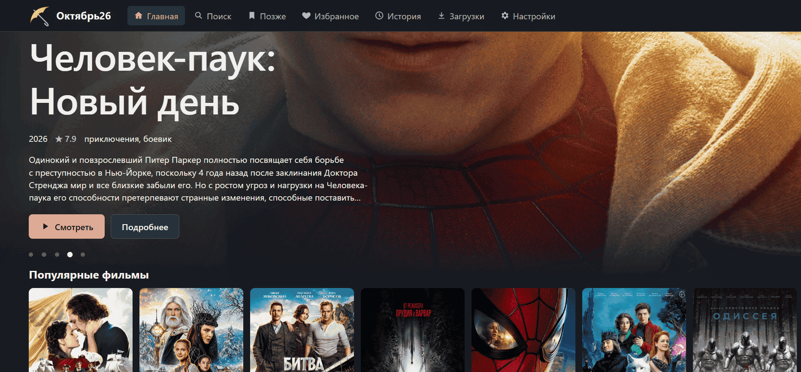

Октябрь26: домашний кинотеатр на телевизоре, ПК и роутере
Реально домашний кинотеатр на телевизоре, компьютере или роутере: поиск фильмов и сериалов по публичным трекер-поисковикам, просмотр раздачи сразу, пока она качается, и хранение скачанного на диске устройства, флешке или сетевом диске в домашней сети. Без рекламы, аккаунтов и VPN.
Установка по устройствам
- Компьютер с Windows x64
- Роутер Netcraze / Keenetic ARM64 с Entware
- Телевизор или приставка с Android TV / Google TV, Android 11+
- Телефон или планшет с Android 11+
- iPhone или iPad — просмотр через Safari
Как выглядит приложение

Ошибки и предложения
Нашли ошибку или хотите новую возможность — создайте issue.